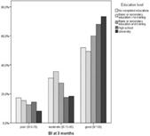

Association between socioeconomic status and functional impairment 3 months after ischemic stroke: the Berlin Stroke Register.
Int J Stroke 2010 Apr;5(2):68-73 PMID:20446939
Breuer L,Schellinger PD,Huttner HB,Halwachs R,Engelhorn T,Doerfler A,Köhrmann M
Department of Neurology, University of Erlangen-Nuremberg, Erlangen, Germany.
经济社会地位低的人群卒中发病率和致死率均较高。既往研究也证实经济社会地位低下患者卒中后功能预后也较差。
但是这些差异都被归咎于主要危险因素在不同经济社会群体中的分布不同。然而，柏林医学院卒中研究中心的Maike Grube等人通过研究发现：教育程度低的患者功能预后较差，无法用临床和一般特性的差异进行解释。相关论文发表在Stroke杂志2012年1
0月2日在线版上。研究人员从柏林卒中注册网络（包含柏林的14个卒中单元网络）获取数据。连续纳入2010年6月至2011年9月之间在柏林卒中注册网络中任何一所医院住院的缺血性卒中患者，卒中发生后通过邮件或电话随访3个月。使用多变量对数回归检验社会经济状态（以最高学历为标志）与卒中后功能缺陷（用Barthel指数分类定义）之间的关系。研究人员将年龄、性别、卒中前的独立能力、卒中严重程度、卒中发病时的功能缺损情况和合并症视为可能共同影响因素，对其进行校正。
结果发现：总共1688位缺血性卒中患者在发病后3个月依然生存，完成了纳入分析的问卷调查；其中40%的患者为女性，50%的患者年龄不小于70岁。年龄、卒中前自理情况、卒中严重程度和没有合并症与发病后3个月功能恢复良好相关。根据多变量分析可以看出，大学及以上学历的患者较没有完成学业的患者出现好的预后的机会更大(相对危险度：2.18; 95% 可信区间 1.39–3.42)
研究人员得出结论：教育程度较低的卒中患者获得更好的功能预后的可能性相对低，无法完全用患者的临床和一般情况特性差异进行解释，需要进一步深入研究。
翻译:背景和目的：我们旨在分析患者社会经济状况和卒中后3个月功能障碍情况之间的相互关系，并确定影响这种相互关系的因素。
方法:从柏林卒中注册网络（包含柏林的14个卒中单元网络）获取数据。连续纳入2010年6月至2011年9月之间在柏林卒中注册网络中任何一所医院住院的缺血性卒中患者，卒中发生后通过邮件或电话随访3个月。我们使用多变量对数回归检验社会经济状态（以最高学历为标志）与卒中后功能缺陷（用Barthel指数分类定义）之间的关系。我们将年龄、性别、卒中前的独立能力、卒中严重程度、卒中发病时的功能缺损情况和合并症视为可能共同影响因素，对其进行校正。
结果:总共1688位缺血性卒中患者在发病后3个月依然生存，完成了纳入分析的问卷调查；其中40%的患者为女性，50%的患者年龄不小于70岁。年龄、卒中前自理情况、卒中严重程度和没有合并症与发病后3个月功能恢复良好相关。根据多变量分析可以看出，大学及以上学历的患者较没有完成学业的患者出现好的预后的机会更大(相对危险度：2.18; 95% 可信区间 1.39–3.42)
结论:教育程度较低的卒中患者获得更好的功能预后的可能性相对低，无法完全用患者的临床和一般情况特性差异进行解释。